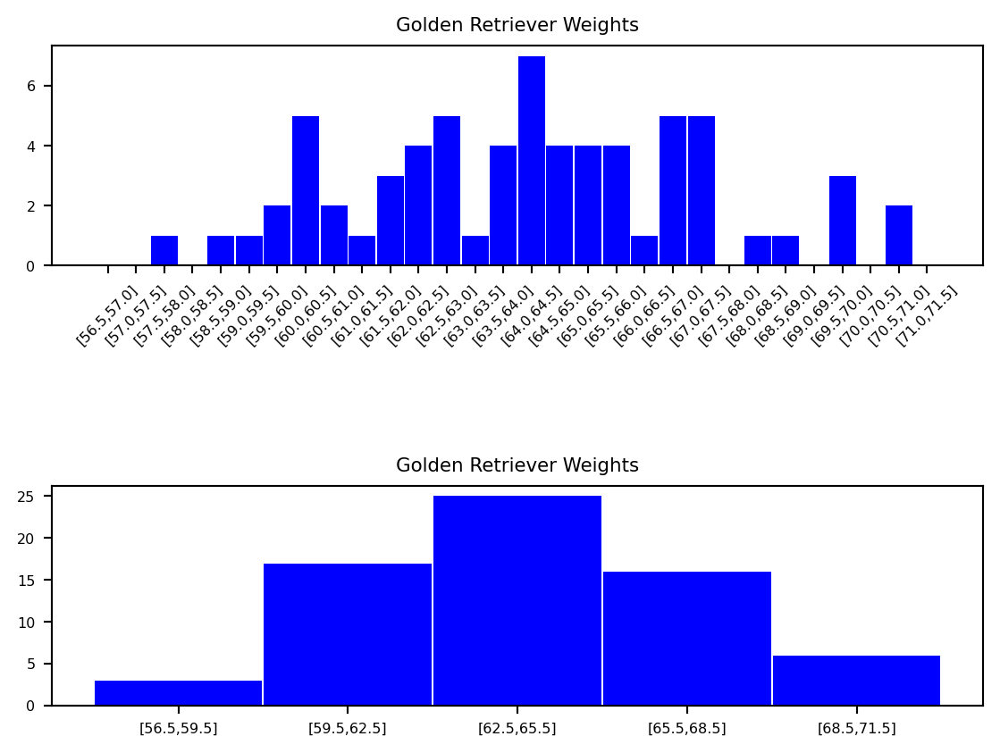
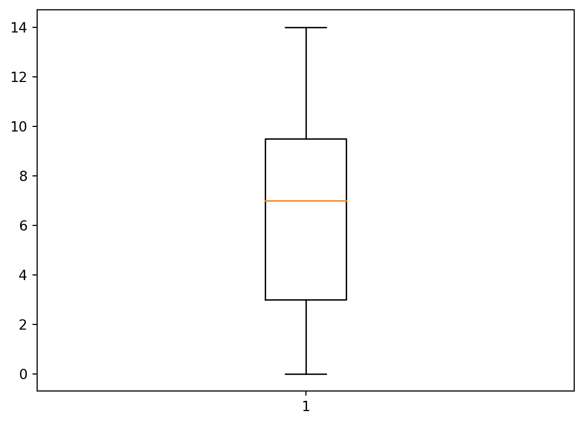
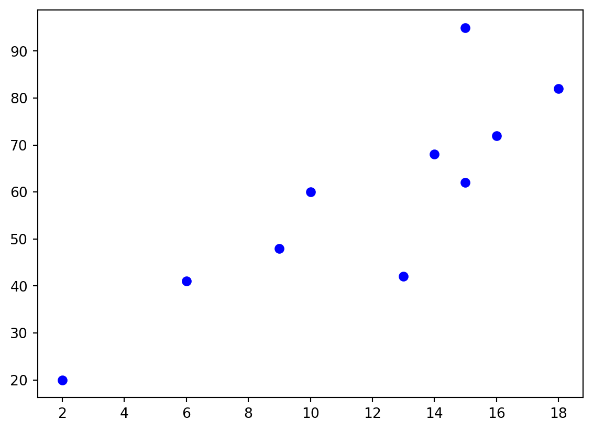

1 Basic Concepts in Statistics
\[ \renewcommand{\P}{\mathbb{P}} \renewcommand{\E}{\mathbb{E}} \newcommand{\R}{\mathbb{R}} \newcommand{\var}{\mathrm{Var}} \newcommand{\cov}{\mathrm{cov}} \newcommand{\corr}{\mathrm{corr}} \newcommand{\dx}{\,\mathrm{d}x} \newcommand{\dy}{\,\mathrm{d}y} \newcommand{\eps}{\varepsilon} \]
This section will follow closely Chapter 3 of Essential Math for Data Science by T.Nield (see the Reading List on Canvas).
In simple terms, statistics is the collection, analysis and interpretation of data. Data can be qualitative (e.g. hair colour, make of car, etc.) or quantitative (numerical). Data can also be discrete or continuous, where discrete data is distinct, e.g. hair colour and continuous data takes a range of values, e.g. height.
Probability often plays a large role in statistics, as we use data to estimate how likely an event is to happen.
Statistics is the heart of many data-driven innovations. Machine learning in itself is a statistical tool, searching for possible hypotheses to correlate relationships between different variables in data.
We can easily get caught up in what the data says that we forget to ask where the data comes from. These concerns become all the more important as big data, data mining, and machine learning all accelerate the automation of statistical algorithms. Therefore, it is important to have a solid foundation in statistics and hypothesis testing so you do not treat these automations as black boxes.
Note that we will recap/cover these concepts shortly.
Descriptive statistics is the most commonly understood part of statistics and we use it to summarise data. Inferential statistics tries to uncover attributes about a larger population, often based on a sample. It is often misunderstood and less intuitive than descriptive statistics. Often we are interested in studying a group that is too large to observe, for example the average height of adults in the UK, and we have to resort to using only a few members of that group to infer conclusions about them. As you can guess, this is not easy to get right. After all, we are trying to represent a population with a sample that may not be representative.
We next consider populations, samples and bias.
Examples of populations could be “all Swansea University students”, “all adults in the UK”, or “all Golden Retrievers in Scotland”.
If we are going to infer attributes about a population based on a sample, it’s important the sample be as random as possible so we do not skew our conclusions, i.e. we want to avoid bias.
In practice it is not often possible/practical to gain information about a whole population therefore we often use a sample of the population instead. We work with samples because we want to make inferences about the population, but clearly there is a risk in coming to a false conclusion by making an inference about the whole population using a sample. Therefore there is a need for statistics tests to ensure that similar results would be obtained if a study were to be repeated and that the results are not just due to sampling variability.
Intuitively, we know that bias is when something is not evaluated in an objective way, however in statistics we have certain types of bias, see below.
We now look at some descriptive statistics in more detail, beginning with measures of location.
Example 1.8 Eight people from the general UK population were polled on the number of pets they own. The results are shown below: \[ 1, 3, 2, 5, 7, 0, 2, 3. \] These are the \(x_1, \ldots, x_8\) terms as in the previous definition of the sample mean.Therefore, the sample mean is then given by: \[ \bar{x}=\frac{1+3+2+5+7+0+2+3}{8}=\frac{23}{8}=2.875. \]
Example 1.9 We now modify the situation of the previous example to where the population is now students studying a certain Mathematics module at Swansea University. The values for the whole population are as follows: \[ 2,1,3,4,2,6,4,0,1,1,3,3,4,1,1,5,5,2,1,3. \]
The population mean is then given by: \[ \begin{aligned} \mu&=\frac{2+1+3+4+2+6+4+0+1+1+3+3+4+1+1+5+5+2+1+3}{20}\\ &=\frac{52}{20}=2.6. \end{aligned} \]
Example 1.11 Let us consider a module with three coursework components worth 20% each and a final exam that is worth 40%. A student scores \(90, 80, 63\) and 87 respectively in these components. The weights are therefore 0.2, 0.2, 0.2 and 0.4 respectively and the weighted average is given by, \[ \frac{0.2\cdot90+0.2\cdot80+0.2\cdot63+0.4\cdot87}{0.2+0.2+0.2+0.4}=81.4. \]
Example 1.13 Calculate the median of the values: 5,0,1,9,7,10,14. Firstly we rank these values to obtain: \[ 0,1,5,7,9,10,14. \] Since \(n\) is odd (i.e. 7) we take the middle value of 7 to be the median. If we now add one value of 20 to this example, then the modified ranked data is given by: \[ 0,1,5,7,9,10,14,20. \] Now we have an even number of values (i.e. 8) and hence the median is given by \(\tfrac{7+9}{2}=8\).
Example 1.16 Find the mode of the values \(20,21,19,20,22,19,20\). The most common value is 20, hence 20 is the mode of this dataset.
The mode is not necessarily unique, see the example below for an illustration.
Example 1.17 If we return to Example 1.8, we find that the mode for the number of pets is 2 and 3.
We now consider measures of variation of data. This gives us a sense of how “spread out” the data is. It is important to note that there are some calculation differences for the sample versus the population.
Example 1.20 In this example we are interested in studying the number of pets owned by members of staff in a certain shop (note that this is our population, not a sample). The data are as follows: \[ 0,14,5,9,7,10,1. \] The mean of this sample is 6.571, hence the variance is given by
\[ \begin{aligned} \sigma^2&=\frac{\sum_{i=1}^N(x_i-\mu)^2}{N}\\ &=\text{\scriptsize{$\dfrac{(0-6.571)^2+(14-6.571)^2+(5-6.571)^2+(9-6.571)^2+(7-6.571)^2+(10-6.571)^2+(1-6.571)^2}{7}$}}\\ &=21.29. \end{aligned} \]
Therefore the standard deviation is given by \(\sigma=\sqrt{21.38}=4.62\). (All to 2dp.)
Example 1.21 We now modify the previous example to the situation where the data provided are a sample of a larger population. We now calculate the sample variance and standard deviation: \[ \begin{aligned} s^2&=\frac{\sum_{i=1}^n(x_i-\bar{x})^2}{n-1}\\ &=\text{\scriptsize{$\dfrac{(0-6.571)^2+(14-6.571)^2+(5-6.571)^2+(9-6.571)^2+(7-6.571)^2+(10-6.571)^2+(1-6.571)^2}{6}$}}\\ &=24.95. \end{aligned} \]
Therefore the sample standard deviation is given by \(\sigma=\sqrt{24.95}=4.99\). (All to 2dp.)
Notice that the sample variance and standard deviation have increased compared to the population case. This is correct as a sample could be biased and imperfect representing the population. Therefore, we increase the variance (and thus the standard deviation) to increase our estimate of how spread out the values are. A larger variance/standard deviation shows less confidence with a larger range.
We work with samples because we want to make inferences about the population, but clearly there is a risk in coming to a false conclusion by making an inference about the whole population using a sample. Therefore there is a need for statistics tests to ensure that similar results would be obtained if a study were to be repeated and that the results are not just due to sampling variability.
The final topic of this chapter discusses some basic data visualisation techniques - in particular, we will consider histograms, box plots and scatter plots.
Note that there are no gaps between the bars of histograms and the bars can be of varying widths, i.e. they may have different sized intervals or `bins’. Histograms can be used to help determine the distribution of the data.
Example 1.24 In this example we consider the weight of Golden Retrievers. See below for examples of histograms for this data.
This histogram does not reveal any meaningful shape to our data. The reason is because our bins are too small.
As you can see, if we get the bin sizes just right (in this case, each has a range of three pounds), we start to get a meaningful bell shape to our data.
Box plots are useful to visualise the distribution of data, in particular to check for symmetry.
Example 1.26 Let us use the data in Example 1.13 to produce the following box plot.

Scatter plots can be used to plot such data, these plots can also help to visualise a relationship between the variables. One variable is plotted on the horizontal axis and the other on the vertical axis.
Example 1.29 Let us consider the data below which records exam marks for students and the corresponding time (in hours) the students spent revising for the exam.
This can be represented by the following scatter plot:
